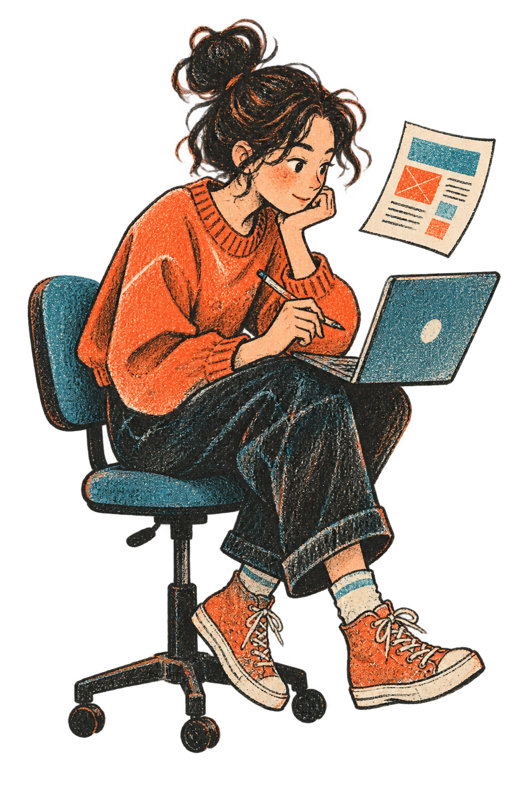

not / 01
merhaba, ben Baran.
Web geliştirici
ve ürün düşünen
bir yapımcıyım.
Tasarım ile teknik uygulamayı birlikte ele alıyor; anlaşılır, erişilebilir ve aramada güçlü dijital deneyimler üretiyorum.
- İstanbul, Türkiye
- Web geliştirme · AI destekli ürün geliştirme
